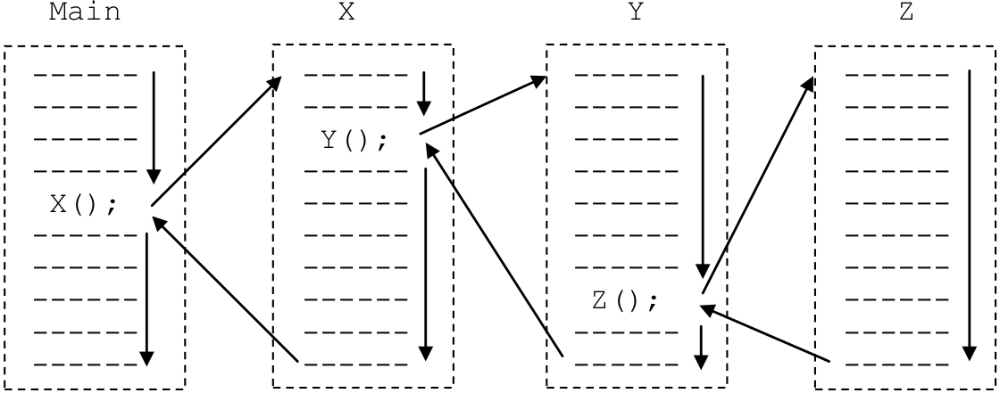
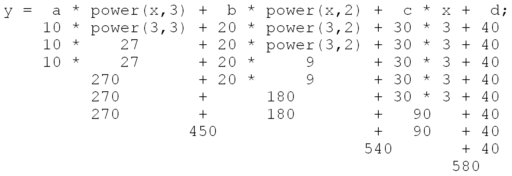

This section is concerned with creating and using function subprograms. A subprogram is a program within a program. Very few “real” programs are written as one long piece of code. Instead, traditional imperative programs generally consist of large numbers of relatively simple subprograms that work together to accomplish some complex task. While it is theoretically possible to write large programs without the use of subprograms, as a practical matter any significant program must be decomposed into manageable pieces if humans are to write and maintain it.
Subprograms make the construction of “software libraries” possible. A software library is a collection of subprograms, or “routines” as they are sometimes called, for solving common problems that have been written, tested, and debugged. Most programming languages come with extensive libraries for performing mathematical and text string operations and for building graphical user interfaces. These languages allow programmers to “include” library routines into their code. Using subprograms from the library speeds up the software development process and results in a more reliable finished product.
When a subprogram is invoked, or called, from within a program, the “calling” program pauses temporarily so that the “called” subprogram can carry out its actions. Eventually, the called subprogram will complete its task and control will once again return to the “caller”. When this occurs, the calling program “wakes up” and resumes its execution from the point it was at when the call took place.
Subprograms can call other subprograms (including copies of themselves as we will see in ). These subprograms can, in turn, call other subprograms. This “chain” of subprogram invocations can extend to an arbitrary depth as long as the “bottom” of the chain is eventually reached. It is necessary that infinite calling sequences be avoided, since each subprogram in the “chain” of subprogram invocations must eventually complete its task and return control to the program that called it.
illustrates the process of subprogram invocation and return. In the particular situation presented in the figure, a main program calls a subprogram named X. When this subprogram is called, execution of the main program is suspended and X begins to run. At some point during the execution of X, subprogram Y is called. When this occurs, X is temporarily suspended and control passes to Y. Likewise, during the execution of Y, subprogram Z is called. As a result, the execution of Y is suspended and Z begins to run. Subprogram Z is at the “bottom” of the calling chain, since it doesn’t call any other subprograms. It will run to completion.
When Z completes, control will return to subprogram Y. Subprogram Y will continue execution from the point at which it was suspended. At the completion of Y, control will return to subprogram X, again, at the point where it was suspended. Finally, when X completes, control will return to the main program, which can now run to completion.
Subprogram invocation and return
In addition to the mechanisms for subprogram call and return, programs and their subprograms must have ways of passing data between one another. For example, a subprogram designed to compute xy (x raised to the y power) must have a way to receive the values of x and y from the calling program and also must be able to return the computed result to the caller. In general, a subprogram may be passed any number of input values (zero or more) from its calling program during the subprogram invocation process. A subprogram can pass values back to its calling program during the subprogram return process.
Watson JavaScript supports only one type of subprogram, known a function. The general format of a Watson JavaScript function definition is:
Function definitions begin with the key word “function” followed by the name of the function that is being defined. A comma separated list of input variables and their types, text or numeric, appear after the function name, enclosed in parentheses. These variables allow the function to receive input from the calling program.
In addition to receiving inputs from the calling program, functions may (or may not) return a result value. The type of this result: numeric, text, or “nothing”; is specified at the end of the first line of the function declaration. If the value returned by the function is a number, the “Numeric” type will be specified. If the value returned by the function is a text string, the “Text” type will be specified. If the function does not return a result, the keyword “nothing” will be used to indicate that fact.
A program containing a programmer-defined function
Following the first line of the function declaration, the body of the function, enclosed in brackets, is presented. Since functions are subprograms, their bodies contain both variable declarations and statements.
It is important to note at this point that a function declaration defines a function. These declarations define the attributes of a function: its name, its input variables and their types, the type of the function’s return result, the variables declared by the function and the statements that describe the actions to be taken by the function when executed. What a function definition does not do is actually execute, or run, the function. In order for a function subprogram to do anything it must be called.
Functions are called by referring to them by name in a calling program and supplying any required input values. The general format of a Watson JavaScript function call is:
functionName(inputs);
presents a program that prints a simple banner of the form:
* * * * Hello World! * * * *
The program accomplishes its task by defining and then using a function subprogram named banner that accepts a text string named message and then prints that message surrounded by asterisks. The banner function does not return a value to the calling program, as its mission in life is to display a banner on the computer screen – not compute some value to be used by the calling program.
Subprogram definitions in Watson JavaScript are located in the declarations section of the main program, immediately above the program statements. To help the definition of banner stand out from the rest of the program, it is shaded in gray in .
In the program of , banner will receive a single input value from the calling program. This value is a text string that will be accessed through the variable message. The statements of the banner function will cause a simple banner to be displayed by: writing a blank line, then four asterisks, then the contents of the message string, then four more asterisks, and finally another blank line. Note that the content of the banner’s message is not fixed. Whatever text string is passed to this subprogram will be printed between the asterisks.
Now that we have discussed the definition of the banner procedure, let’s turn our attention back to the main program. The statements that define the actions to be taken by the main program occur immediate after the function declaration. These actions consist of a single statement that calls the banner function and passes it the string “Hello World!”.
Some people are initially put off by the fact that the main program, which is executed first, is physically located after the subprogram declarations. A moment of reflection should convince you that this really isn’t so odd, since it is reasonable to insist that subprograms be fully defined before they can be used (called).
Thus, execution of the program begins with the statement:
banner(“Hello World”);
This statement is an instance of a function invocation statement where the functionName is banner and the inputs consist of the single text string “Hello World!”. In general the inputs to a function, or arguments as they are often called, consist of a comma-separated list of zero or more expressions. These expressions can be constants, variables, or general expressions involving mathematical operators. When the function invocation statement is executed, the value of each argument is computed and passed to the subprogram being called. Thus, in the present example, the string “Hello World!” is passed to the banner subprogram, where it is mapped to the text variable message.
The number and type of arguments in a function invocation statement must exactly match the number and type of variables in the first line of the function declaration. If more than one value is passed to the function, the first argument is mapped to the first variable, the second argument to the second variable, and so forth.
A program to raise an integer value to the third power
contains a program for raising a number to the third power. The program declares three things: an integer variable named “a”, an integer variable named “b”, and a function named power. The power function is a general purpose subprogram for raising x to the y power (xy ) given values for both x and y. Unlike the banner function, which did not need to return a value to the calling program, this subprogram must have the ability to report its results back to whomever called it.
The main program of begins by prompting the user to enter a value. The user’s input is then read into the numeric variable “a”. The next statement:
b = power(a,3);
a” to the third power and store the result in “b”. It does so by embedding a call to the power function in the right hand side expression of an assignment statement. The last three statements of the main program report this result to the user.
Turing our attention to the definition of power, we can see that the first argument passed to this subprogram will be mapped to a variable named x and the second argument will be mapped to y. The result returned by this program is defined to be numeric.
The input variable list associated with a subprogram is often called its “parameter list”, with the individual variables called “parameters”. When called, the first argument in the argument list of the function call statement, “a” in this case, is mapped to the first parameter in the function’s parameter list, “x” in this case. The next argument, 3 in this case, is mapped to the next parameter in the parameter list, “y” in this case. As mentioned earlier, the number of arguments, and their types, must exactly match the number and types of the variables in the function’s parameter list.
The power subprogram of declares two numeric variables for use within the body of the function. These variables, named “i” and “z”, are known as a “local variables” since they exist only within the power function. The main program doesn’t know about “i” or “z”. It only knows about a, b, and a function named power. Thus, the main program cannot directly access or in any way modify “i” or “z”. This concept, known as “information hiding” is very important when writing sizable programs.
Imagine a large program being written by a hundred programmers. Without local variables, every programmer would have to know the name of every variable used by every other programmer. This shared knowledge would be necessary in order to keep two or more people from accidentally using the same variable name for different purposes at the same time.
In order to see the problem more clearly, imagine that I think timer is my variable so I put a 0 in it. However, you think timer is your variable and you put a 10 in it. Later, my code increments timer by 1. At this point I think there should be a 1 in timer, you think there should be a 10 in timer, but we are both wrong since timer now holds 11. Any code that either of us writes that depends on the value of timer will now be flawed and not produce the results we expect.
Using subprograms and local variables avoids these kinds of situations. If a program can be divided into 100 pieces and the “interfaces” between those parts defined, then one hundred programmers could work on the program at the same time– each concentrating on his or her own subprogram. Any local variables declared in one subprogram would be completely separate from all other subprograms. Hence, you and I could both declare a variable named timer locally in our respective subprograms. Since these would be local variables, the system would treat them as completely separate entities. Furthermore, the code I write in my subprogram will only be able to “see” my timer, while the code you write in your subprogram will only be able to see your timer. Any modification I make to my timer cannot directly affect your timer, and vice versa.
Returning our attention to the definition of the power function, we note that the algorithm it uses to compute z = xy works by first setting z to 1 and then repeatedly multiplying the value of x times the current value of z over and over, a total of y times. This makes sense because xy is simply x × x × x . . . × x where there are y total x’s.
This algorithm is implemented in the following way. The first executable statement of power sets z to 1. The next line begins a “for” loop that executes a total of y times as the variable i counts from one to y. Within the loop is a single statement that multiplies z by x. When the loop begins z equals 1. After the first pass through the loop z equals x (or x1 ), after the second pass through the loop z equals x times x (or x2 ), after the third pass x times x times x (or x3 ). Finally, after the yth pass z will equal xy.
The final statement in the power function is
return(z);
Return statements are used to transfer a value from a function back to the calling program – in this case, the value of z. The general form of the Return statement is:
return(expression);
The purpose of the “return” statement is to terminate execution of the current function and return the value of the expression to the calling program. The expression listed in the Return statement can be a constant, variable, or general expression. The only restriction is that the type of value produced by the expression must match the type specified after the keyword returns on the first line of the function definition.
Although “return” statements can occur anywhere within a function, they usually appear as the very last statement. Not all functions have “return” statements. Specifically, functions that return nothing to their calling program, such as the banner function of , generally do not include “return”
When the “return” is executed, three things happen: the function ceases execution, the return value is passed back to the calling program, and the calling program “wakes up” at the point at which the function was called. Thus, when the “return” statement of is executed, control returns to the main program and the value of a3 is assigned to “b”.
presents another example of a program that incorporates the power function of . The main program of computes the value of the third degree polynomial: A X3+ B X2+ C X + D where A, B, C, D, and X are numeric values entered by the user.
The program begins by declaring six numeric variables: a, b, c, d, x, and y; and one function, power. After declaring the variables and the function, “prompt” statements are used to read in values for x, a, b, c, and d. The following statement is then executed:
A program to compute the value of A X3+ B X2+ C X + D
This assignment statement incorporates two separate calls to the power function. The first call to power computes x3, while the second call computes x2. The manner in which power is called illustrates an important point. Multiple function calls can be embedded within a single statement. The reason for this is that function calls are expressions, rather than complete statements. As such, they can be embedded within mathematical (and text) expressions, and can thus appear wherever an expression is allowed – such as on the right hand side of assignment statements, and in “write” and “writeln” statements.
When a function subprogram is called, the evaluation of the current statement in the calling program is temporarily interrupted. When the function returns, its value is substituted into the current expression at the point of the call, and execution of the interrupted statement resumes. Hence, if x were 3, power(x,3) would evaluate to 27 and power(x,2) would evaluate to 9. Assuming a was 10, b was 20, c was 30, and d was 40, the above expression would be evaluated in the following way:
So the value assigned to the variable y under these assumptions is 580.
As should be apparent from this example, function subprograms are quite convenient for implementing mathematical functions.
One other point should be made about the program of . The program illustrates the concept of local variable names. Note that both the main program and the power function have variables named x and y. Watson JavaScript will not confuse the variables in the main program with those of the subprogram.
In the main program, x is used to capture the user’s input and y is used to hold the result of the computation. In the function, x is the base of the power and y is the exponent. It just so happens that due to the way the program is written the x from the main program and the x from the subprogram will always have identical values. The y from the main program and the y from the subprogram, on the other hand, are used for completely different purposes and are unlikely to hold identical values.
Let’s conclude this section by revisiting the beer program of . presents a revised version of this program, incorporating a function called singsong. The main program now asks the user for the number of bottles, and stores the response in count. singsong is then called and the value of count is passed to the input parameter, beers.
singsong contains a “while” loop that prints the lyrics to each verse of the song. During each verse, one of the beers is consumed. The loop terminates when the number of beers is no longer greater than zero.
The input/output behavior of this program is identical to the program of with the sole exception that “Later…” is printed at the end of the song. In fact, if it were not for this minor difference, a user would have no way of knowing which version of the program he or she was executing.
Beer – the iterative subprogram version
Exercises for
Rewrite the program of so that the function returns a string. The new singsong function should test beers to see if it is greater than zero. If so, it should print the lyrics and then return the text string “Later…”. If not, it should return the text string “Sorry…”. Have your main program print out this return value. Hence, if a user enters zero or a negative number in answer to the question “How many bottles?” the response presented will be “Sorry…”. If the user enters a positive number greater than zero, the lyrics of the song will be printed followed by “Later…”.